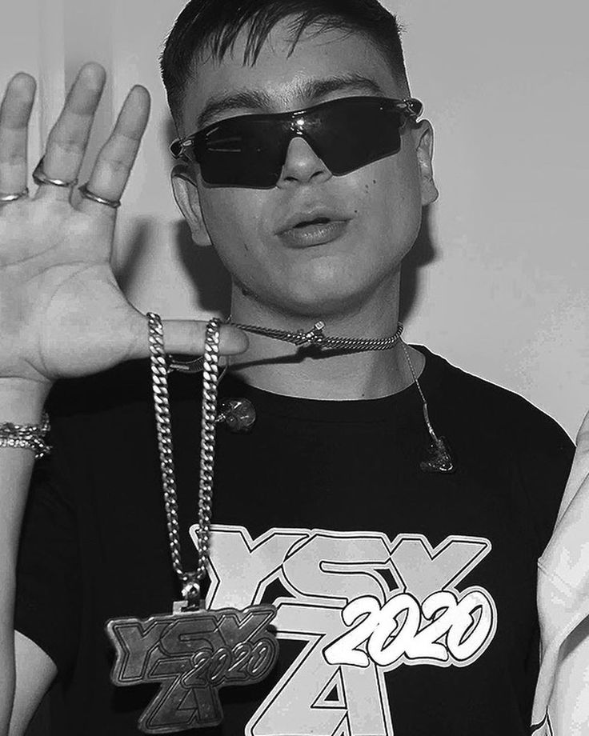

'SPONSOR DIOS Y MODO DIABLO'
Alejo Nahuel Acosta (Buenos Aires, Argentina; 12 de julio de 1998), conocido artísticamente como YSY A, es un rapero, compositor, productor, freestyler y diseñador argentino, principalmente del género del trap. Alejo se hizo conocido en 2012 cuando formó la competencia de rap El Quinto Escalón con apenas 13 años, junto al músico y presentador Muphasa MC. En 2016 la competición se popularizó de manera desenfrenada, y se volvería la más importantes de Sudamérica, además de ser cuna de muchos artistas emergentes de la escena del trap argentino. Luego de la finalización del torneo el 11/11 2017, YSY A decidió lanzar su carrera musical. En 2018 formó parte del trío musical #ModoDiablo junto a Duki y Neo Pistea, que popularizó al género en Argentina gracias a sus sencillos «Quavo» y «Trap N' Export», y lanzó su álbum de estudio debut el 11/11, Antezana 247. El 11/11/2019 publicó su segundo álbum de estudio, Hecho a Mano. En 2020 lanzó una serie de sencillos bajo el nombre de #YSYA2020, de los cuales «Silbando» y «Un Flow de Infarto» sumaron millones de visitas en YouTube, y sacó su primer EP, Mordiendo El Bozal. El 11/11/2021 publicó su tercer álbum de estudio, Trap de Verdad, bajo su propio sello discográfico, Sponsor Dios.
